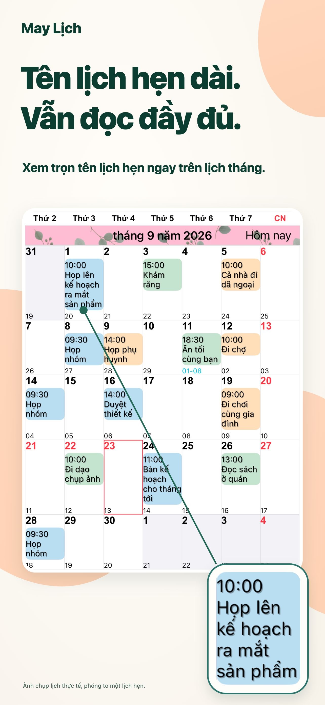
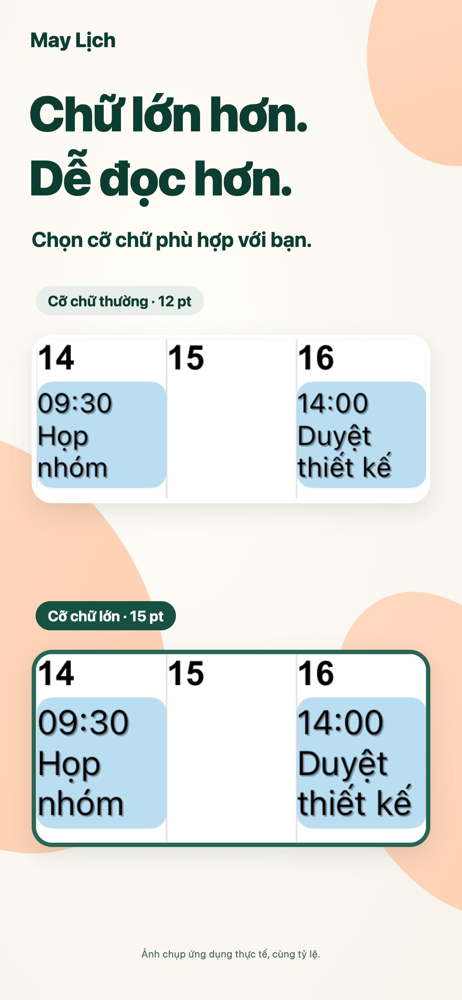
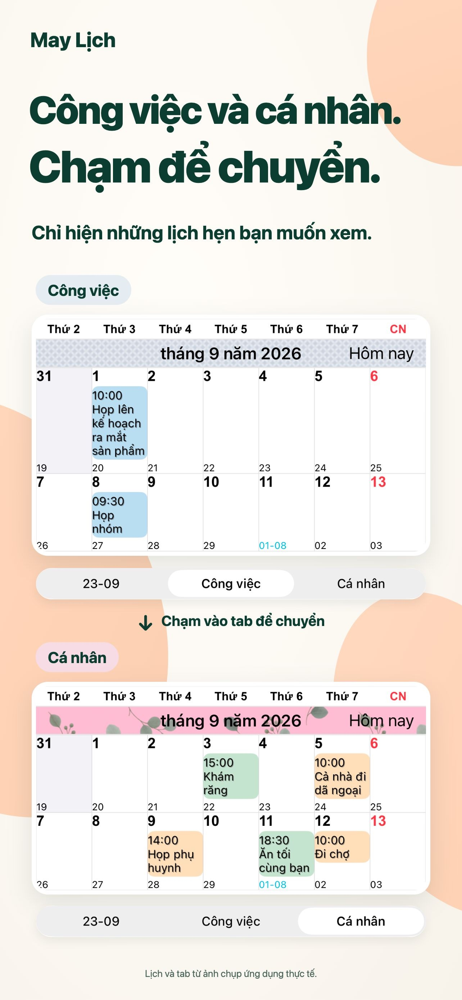
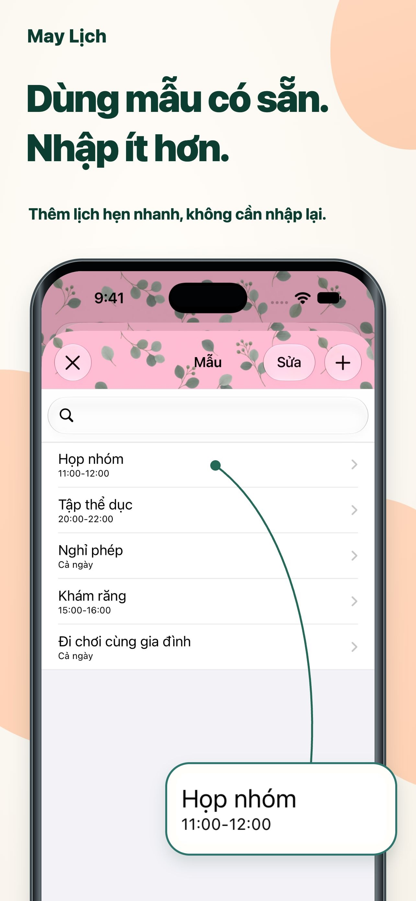

Diện mạo của riêng bạn.
Kết hợp màu chủ đề, nền và họa tiết sự kiện để tạo lịch theo ý thích.
Mỗi ngày rõ ràng hơn.
Tiêu đề dài ngay trong chế độ xem tháng. Chữ và màu sắc theo ý bạn, để dễ dàng nắm bắt lịch trình hằng ngày.
Dành cho iPhone và iPadXem trên App StoreTải miễn phí · Mua trong ứng dụng

Lên kế hoạch mỗi ngày dễ dàng hơn.
Công việc và cuộc sống trong cùng một nơi.CHO CUỘC SỐNG HẰNG NGÀY
Điều chỉnh lịch theo cách bạn lập kế hoạch.
Tiêu đề dài được xuống dòng. Chỉnh phông và cỡ chữ để đọc chi tiết mà vẫn nhìn được toàn bộ tháng.

Lưu các tổ hợp lịch và chuyển giữa kế hoạch công việc và cá nhân chỉ bằng một lần chạm.

Lưu cuộc họp, buổi tập và lịch hẹn thành mẫu. Chạm hai lần vào ngày rồi chọn mẫu để thêm sự kiện.

CHI TIẾT NHỎ, KHÁC BIỆT LỚN.
Kết hợp màu chủ đề, nền và họa tiết sự kiện để tạo lịch theo ý thích.
Chọn trong 20 loại tiện ích, bao gồm tiện ích dành riêng cho iPad.
Chỉ hiển thị sự kiện khớp với nội dung bạn nhập.
HỎI VÀ ĐÁP
Bạn có thể tải miễn phí và sử dụng các mục mua trong ứng dụng. Xem giá và tùy chọn hiện tại trên App Store. Xem trên App Store
Có, ứng dụng hỗ trợ iPhone và iPad. Một số tiện ích chỉ dành cho iPad. Xem yêu cầu hệ điều hành mới nhất trên App Store.
Ứng dụng hỗ trợ lời nhắc, ngày lễ, số tuần và thông tin âm lịch. Bạn cũng có thể đặt ngày đầu tuần và múi giờ.
Thông báo được gửi từ ứng dụng Lịch của Apple. Bạn có thể đặt cảnh báo trước khi sự kiện bắt đầu hoặc kết thúc.
MỖI NGÀY RÕ RÀNG HƠN.
Bắt đầu với một cuốn lịch phù hợp với bạn.